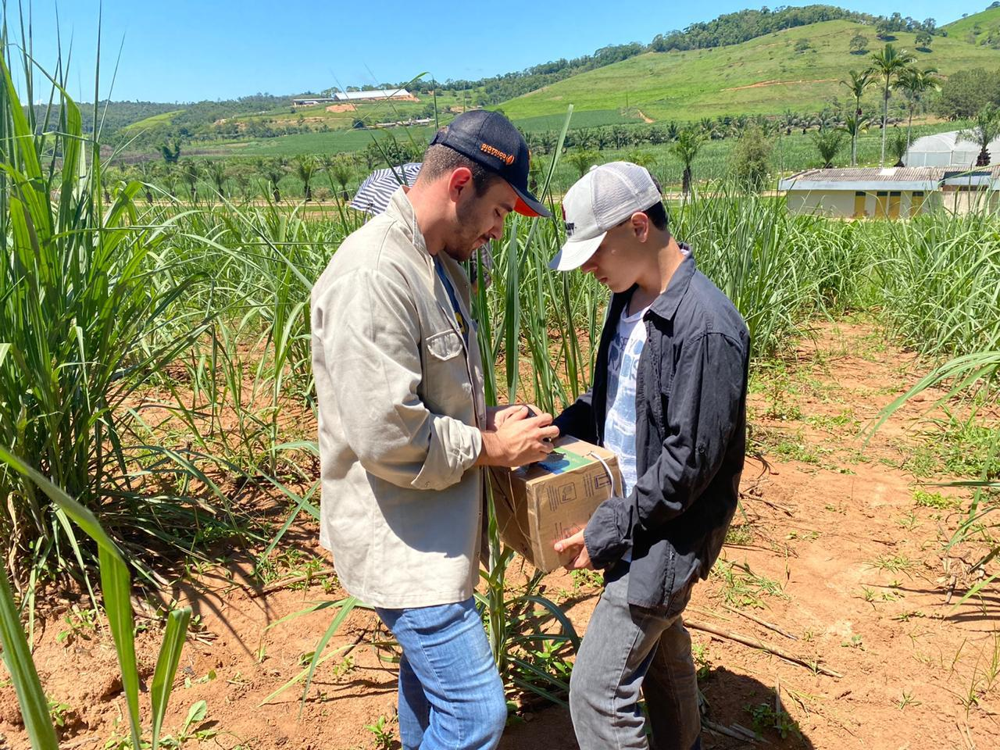
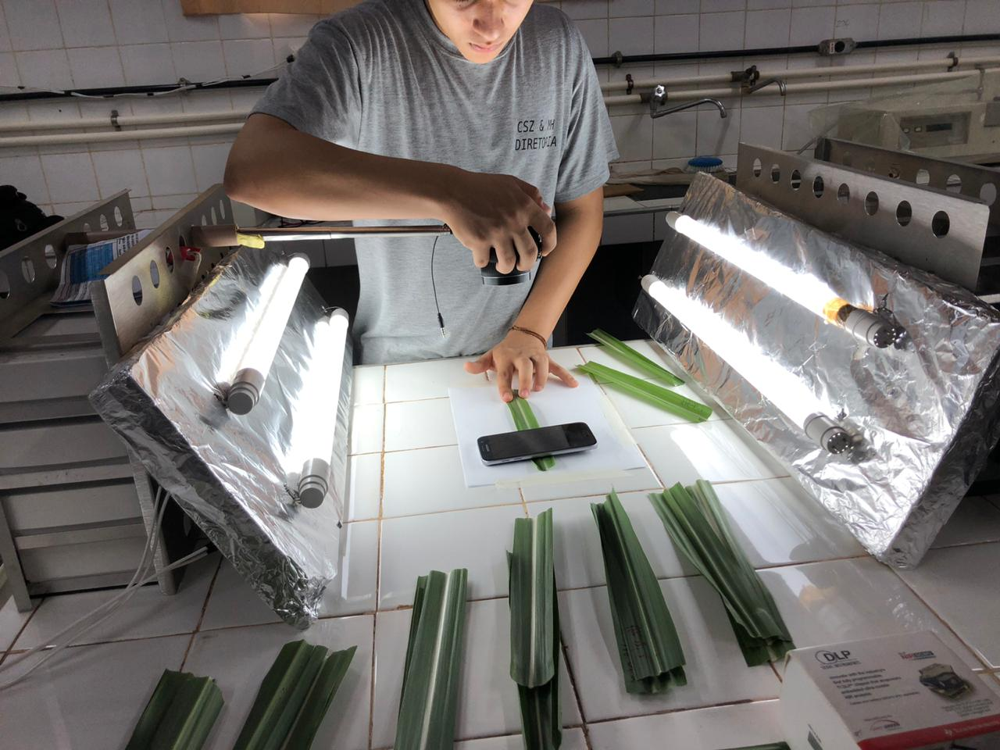
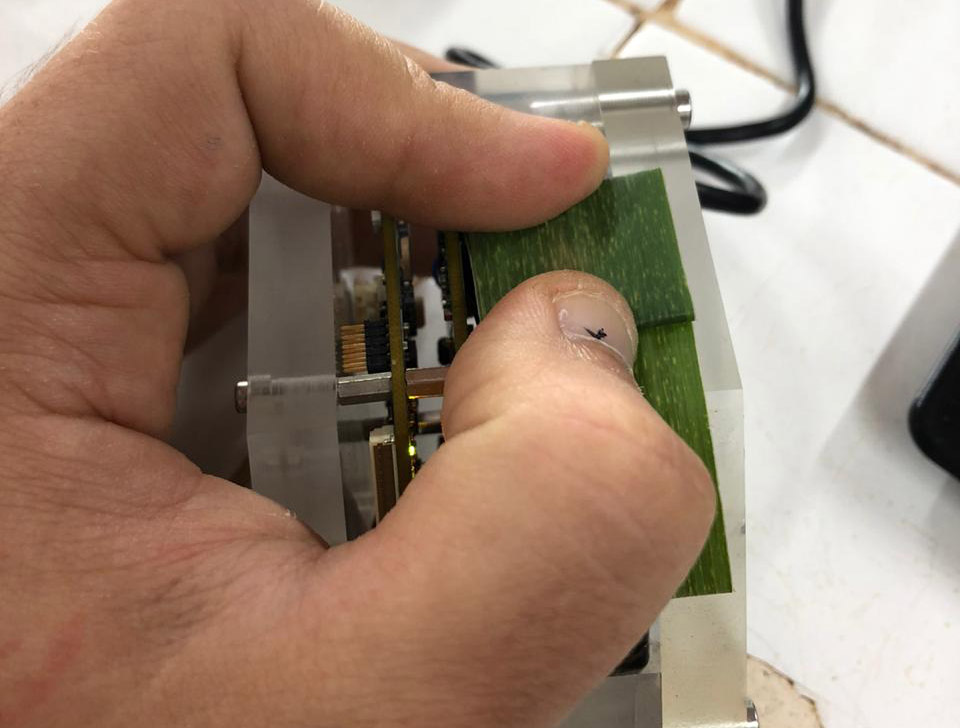
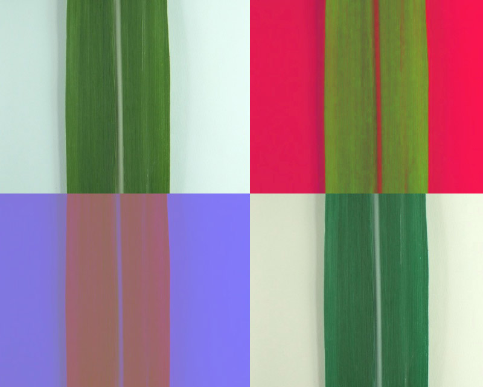
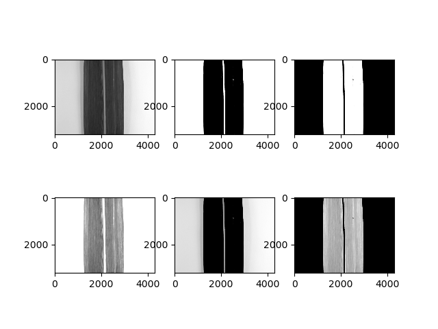
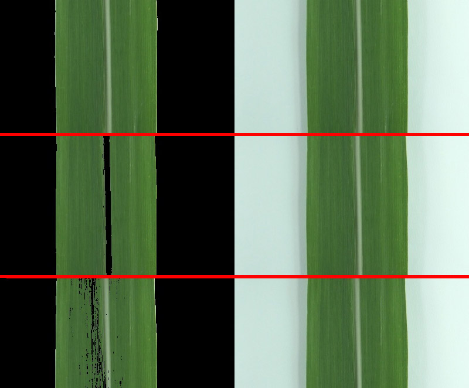
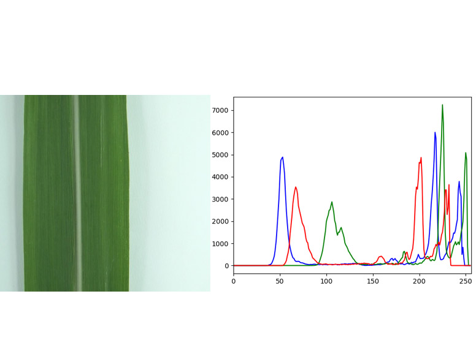
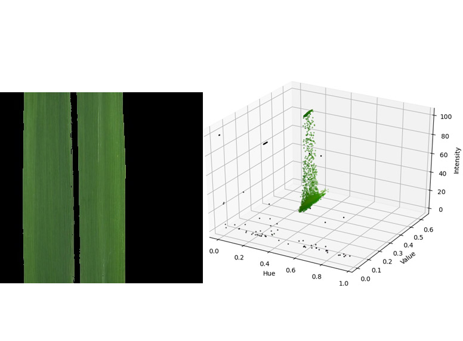
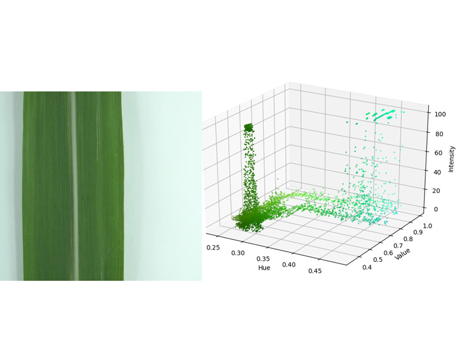

Studies
Use of RGB images and NIR spectroscopy in modeling looking for discrimination of clones in sugarcane families
This project's main contributions are the possibility of a better evaluation of selection procedures between and within sugarcane families, aiming at their more conscious and applied use in breeding programs. In addition, it aims to contribute to the assessment of alternative forms of data collection aimed at optimizing the genetic material and the time available. These results may contribute to greater efficiency in the launch of new genetically improved sugarcane clones.

I currently work looking for ways to better assess and identify the needs for analysis and building a robust database. I took as a challenge the learning of the Python language, together with its packages like OpenCV, NumPy, MatPlotlib among the others, to support the search for my goal, already knowing the R software I believed it would be challenging but satisfactory. Initially, my team and I needed to obtain photos of the sugarcane clones, we went through a series of complications because we wanted to simulate field conditions. However, we could observe that the NIR and SPAD analyzes would not be influenced by the temperature difference between the field and any room in Ridesa's research complex. In the NIR we sought to reduce the energy dissipation that the device would cause by evaluating only 1 layer of leaf, and in the RGB photo we sought homogeneity of the lighting in the leaves.

The expectation was to sample the desired plants every month during January until July 2020, however with the humanitarian crisis that we are currently experiencing, due to the Covid-19 pandemic, we were prevented from continuing. However, I continue my analysis and studies on the data obtained. I tried to go deeper into the Python language while studying computer vision. First, I applied several color spaces to a test RGB image so I could see the differences they would cause. Color spaces can facilitate data analysis and manipulation as they often have only 1 brightness channel, as is the case with L * a * b, or only 1 color channel, whose HSV channel satisfies perfectly.

Through the studies in color space I was able to identify values that in a simple code, together with the OpenCV package, processed the image in such a way that it kept only the leaf blade to apply in later analyzes.

I was also able to create 2D graphics, in RGB space color:

And in 3D, in the HSV space (Hue; Saturation; Value) which would be able to observe the three channels of the color space and the quantity and values of the pixels it contained in that image.

From then on, I continue my studies investigating the possibilities of applying my data obtained in prediction models for discrimination of sugarcane families by RGB images and Near infrared spectroscopy analysis.